微信公众平台的使用¶
过时警告
微信公众平台、「订阅号助手」APP都是在不断更新中的软件，因此当你阅读到本文章时文章里部分示意图、入口等可能已经过时，欢迎你联系作者报告此问题。
微信公众平台的网址是 https://mp.weixin.qq.com/，之前都在讲秀米，怎么现在开始讲微信公众平台了？他们之间的关系如下图所示：
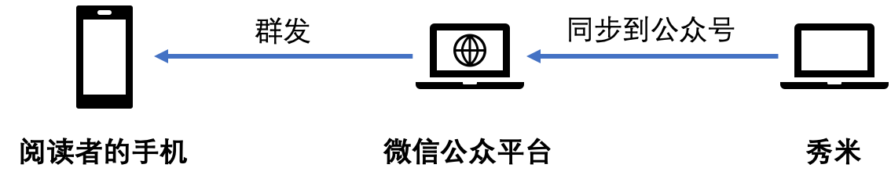
秀米是一个排版的平台，在秀米上排好版之后，我们把图文同步到了公众号的「草稿箱」，接着就是需要将草稿箱中的一篇或多篇图文进行组合后，群发给微信公众号的所有订阅者。
「订阅号助手」APP
使用「订阅号助手」APP 可以在手机上进行简单的操作。对「订阅号助手」的使用将放在本文的最后作为选择性阅读内容。
如何登录¶
点击微信公众平台的网址，可以看到是需要使用二维码扫码登录。
微信公众平台（下称「平台」）的账号与权限系统
首先，平台的账号不是个人的微信号，我们不能像登录微信 APP 那样登录一个平台账号。平台的账号需要「绑定」它的运营者或管理员的微信号，这样运营者或管理员通过自己的私人微信，即可扫码登录平台。
那什么是运营者或管理员呢？
- 管理员：对公众号具有最高的权限，可以类比 QQ 群的群主，可以增删运营者。公众号的身份信息、实名信息都是管理员的。以校学生会为例，一般由主席团分管宣传工作的主席担任管理员。
- 运营者：可以登录公众号进行基本操作（如编辑推送、发推送、修改发出后的推送、回复公众号的后台消息等）。此角色一般由部门内部负责微信推送的同学担任。
- 具有「长期运营者」和「短期运营者」两种，各由管理员进行设置
- 「长期运营者」和「短期运营者」最多能设置 5、20 名
- 短期运营者的有效期为 1 个月，1 个月后需要管理员重新设置
草稿箱在哪¶
我们从秀米那里同步过来的图文将被放在平台的「草稿箱」中，其位置如图所示（点击左侧【内容与互动】-【草稿箱】）
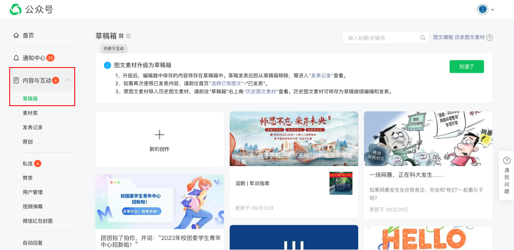
一篇推送的构成¶
前面说过，一篇推送包含一个或多个图文，顺序上第一条图文称之为「主条」，其余的称之为「次条」。
- 之所以仅区分第一条，是因为主条的阅读量从经验上来看会远远大于其他次条；并且其封面最大、为长方形，与次条不同（为小正方形）
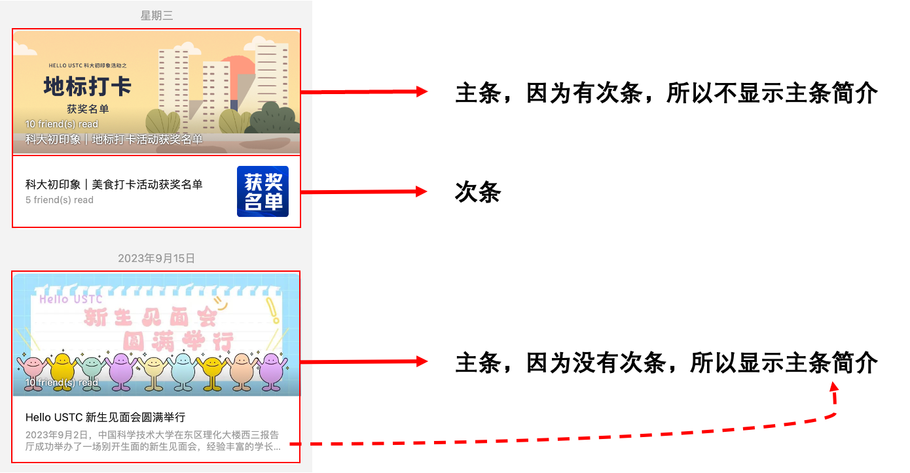
从草稿到推送¶
不管是需要发一条图文的推送还是要发多条图文的推送，都不需要从草稿箱点击【新的创作】按钮，而是从草稿箱中找到【主条】，点击右上角的【编辑】按钮进入编辑。（本小节以青年中心招新推送为例）
插入特有小组件¶
平台支持在图文中加入「公众号名片」「超链接」「视频与音乐」等小组件，这些在秀米上或多或少也能加入，但是步骤不如在平台加入这么简单。建议在秀米上编辑时，在要插入小组件的位置留出空行，等同步到平台后，再在平台进行添加。
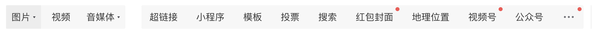
下面介绍一些常用的小组件。
超链接¶
超链接可以让用户点击文字或图片跳转到其他网页。要注意的是，为了安全起见，平台只允许用超链接跳转到其他的公众号文章，非公众号文章的链接（如科大教务处网站）平台是不允许添加超链接的。
点击上方【超链接】进行添加即可，这里的操作比较简单就不赘述了。
插入的位置
在点击【超链接】按钮前，建议先将鼠标的光标选到要插入的位置（如预留出的空行），超链接会直接插入到鼠标光标所在位置。
插入超链接的效果如图所示，分别是文字超链接和图片超链接。
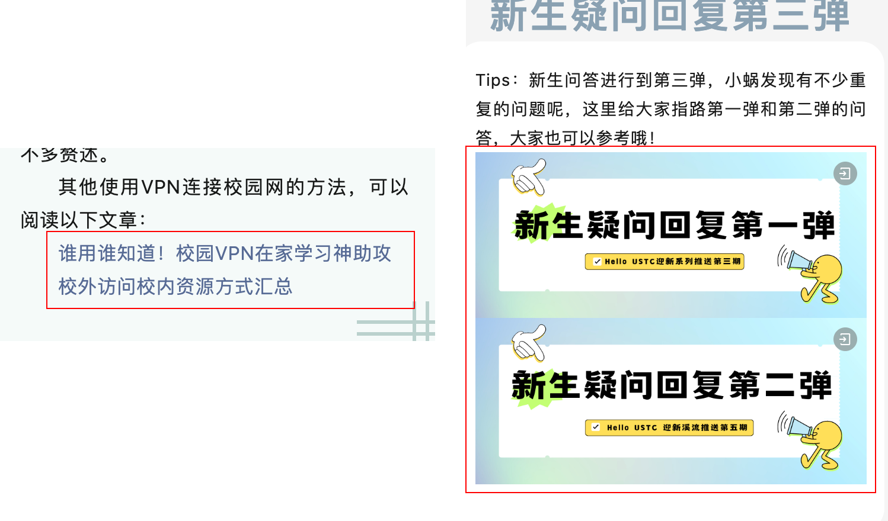
公众号名片¶
有时在文章内部需要指路其他公众号。点击右上角【公众号】按钮，输入要插入的公众号名片的名称，即可插入。
和上一小节一样，请注意鼠标光标与插入的位置。效果如图所示：
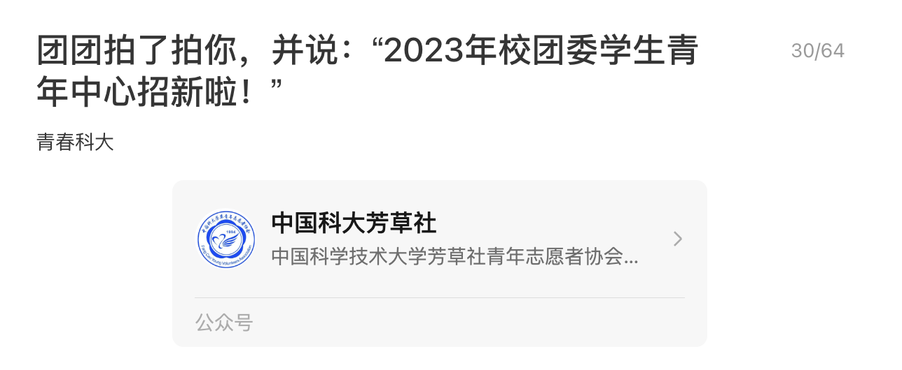
注意：一篇图文最多插入 10 个微信公众号名片。
图文的组合¶
进入编辑后，如果需要添加「次条」，就在左侧点击【选择已有图文】，从草稿箱或者已发表图文中找到你需要添加的次条，步骤如下（最终效果如最右边所示，一个主条、两个次条）。
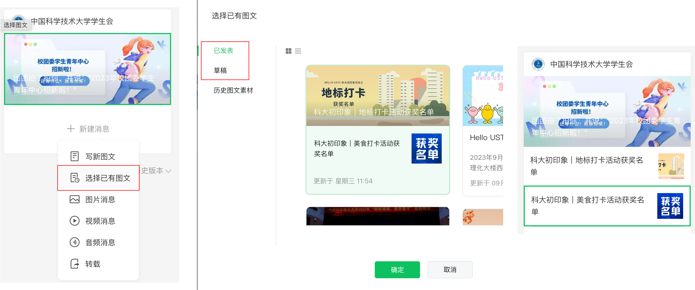
群发前还能做什么？¶
微信公众号的推送一旦发出就只能做很有限的内容修改，标题、图片等无法修改，所以群发前一定要慎之又慎。
群发前，还可以做这些事：
-
检查文章标题、简介、正文、封面是否都符合规范，有没有错别字？如果有，可以在平台直接修改，不需要返工秀米
-
可以借助平台的自检功能
- 首先在需要检查的图文编辑页面点击【保存为草稿】，然后平台就会开始自检（进度显示在左下角），自检完成后，如果出现「疑似错别字」，就可以开始做订正了。
- 不过，这个功能找出来的错别字不一定是错别字，有的错别字也不一定检查得出来，只能起到辅助作用。
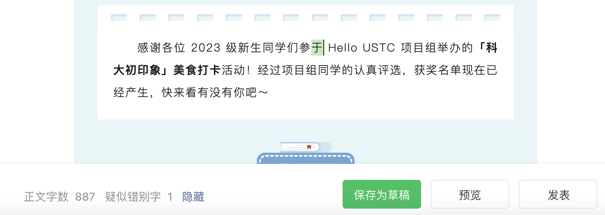
-
文章封面也有可能出现错别字（处刑一下）
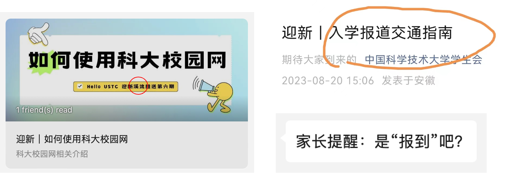
-
-
发送「预览」到特定的微信号，看排布是否有问题。如果有问题，可以直接修改（如调换文字语序等）
- 这里的预览和秀米的预览不同，这里的预览会单独把你编辑的推送发到指定的微信用户，预览起来更加可靠
-
步骤如下
- 在推送编辑界面下方点击【预览】按钮，输入要预览的用户微信号（可以输入多个，输入完一个按回车确认即可）
- 点击【确定】，预览推送将单独发送给你输入的微信用户
-
和阅读真实的推送一样，预览用户需要在微信 APP 的【公众号】位置查看推过来的推送
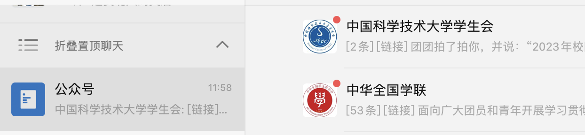
-
预览推送打开时，顶部会有蓝色通知提示
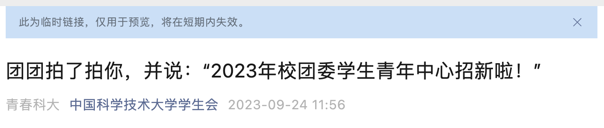
- 预览推送可以转发给其他人（比如审核老师）查看，不过预览的链接有有效期，需要注意
群发¶
核查无误后，运营者可自行进行群发。点击右下角【群发】按钮，然后扫码确认即可。
特别需要注意：
- 学生组织发推送需要 校对-校审-终审 三级审核，分别对应其他干事、宣传部部长/副部长/分管主席、审核老师，审核老师认为无误之后才能群发推送
- 一般推送的群发都由负责微信推送的部长送审，干事只需要将推送排好放在草稿箱中即可
- 一天只能发一次推送。如果推送已经发出，但是还是发现有问题，可以尝试修改；如果不支持修改，则需要删除，第二天才能发新的
推送的事后补救¶
难免会将含有 BUG 的推送群发出去，当我们意识到问题时需要立即补救。
一篇推送在群发之后，就不再在草稿箱中了，可以在左侧【内容与互动】-【发表记录】中找到。
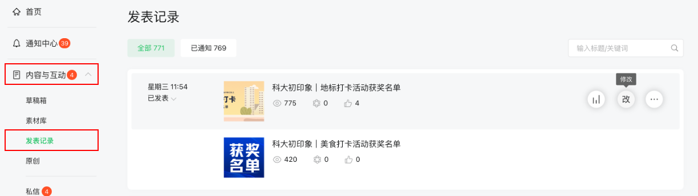
图文的事后编辑¶
在上图中，点击第二个按钮「改」，可以进入修改模式。
截止文章发稿前，平台的修改策略是：
支持修改一次，最多修改20个字，点击图片可替换或删除图片，最多支持3张图片内的修改。
- 在编辑界面，点击自己要修改的字，然后修改即可，比较简单
- 值得一说的是加字，因为只能用类似「修改」的操作去改字，所以要做到「加字」，需要在要加字的位置进行修改，保留原来的字的情况下再往后面加
- 不支持加入换行，只能加单纯意义上的「字」
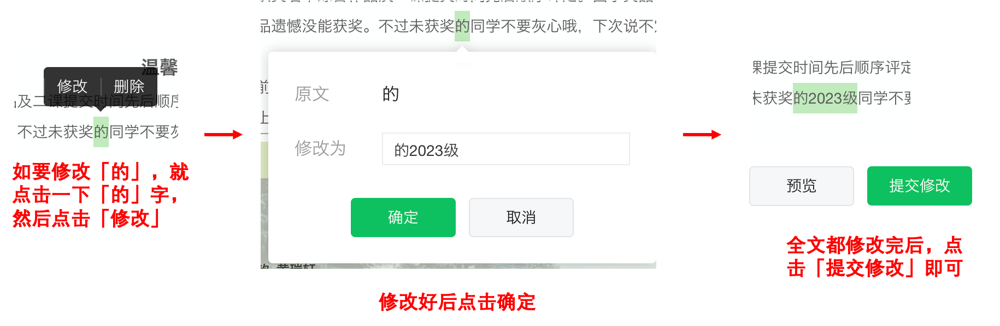
图文的事后删除¶
如果有重大漏洞，则只能先行删除，后续可能需要重新发送一篇新的。
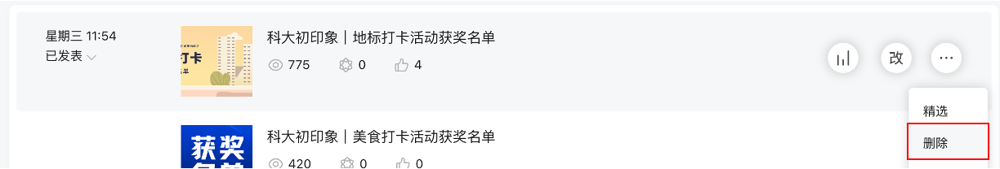
合集功能¶
「合集」相当于给图文打标签，如校学生会 HU 迎新期间发的所有图文都被归入了 “2023年迎新” 这个合集下。
合集有专门的链接入口，可以转发、设置为底部菜单入口等，方便同学们对一个具体的话题进行专门的查询。
编辑合集标签¶
左侧【内容与互动】的第三栏【合集标签】，点开后即可编辑。
给群发文章添加合集标签¶
方法一：（群发前）在发送时，最下方选择标签
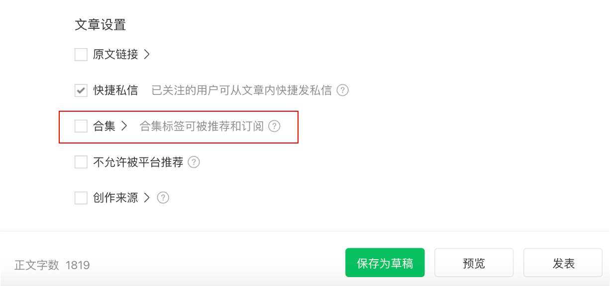
- 注意这种方法只能给当前选中的图文进行添加，不会影响到推送中其他图文
方法二：（群发后）在发表记录中，找到要添加合集标签的文章，选择第三个按钮-【添加合集】
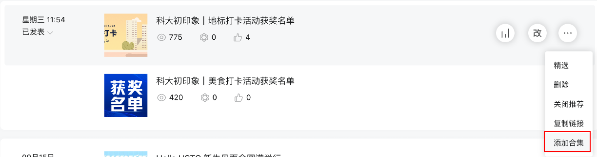
作业¶
无
（撰写：黄瑞轩）